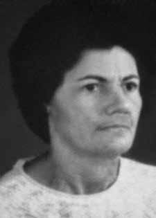

Esmeraldina
Carvalho
Cunha
CIRCUNSTÂNCIAS DA MORTE
Esmeraldina Carvalho Cunha morreu em 20 de outubro de 1972, sendo encontrada morta na sala de sua residência, pendurada por um fio de máquina elétrica. O seu corpo foi encontrado por sua filha Lubélia, ao entrar em casa com seu noivo.
Após o ocorrido, sua outra filha, Leônia, estranhou manchas de sangue espalhadas pelo chão e a ausência de marcas do fio no pescoço de sua mãe, além do fato do rosto dela não estar arroxeado e tampouco a sua língua estar para fora. Desde a prisão de Nilda, em agosto de 1971, junto com o namorado Jaileno Sampaio, na casa onde fora presa Iara Iavelberg, Esmeraldina começou a procurar sua filha em diversos lugares, chegando a entrar em contato com comandantes militares, juízes e advogados.
Quando conseguiu encontrá-la, assustou-se com as visíveis marcas de tortura. Depois disso, Esmeraldina teve muita dificuldade para rever Nilda, até quando esta foi solta e veio a falecer quando estava internada em um hospital em Salvador (BA). Depois de sair da internação no sanatório Ana Nery, Esmeraldina passou a denunciar a morte de sua filha. Inicialmente, procurou os médicos do hospital onde Nilda ficara internada, no entanto, não encontrou ninguém que pudesse esclarecer os motivos que levaram sua filha à morte.
Andava pelas praças públicas e ruas da cidade chorando e gritando acusações contra o Exército sobre a morte de Nilda após terem-na torturado. Em uma dessas andanças, foi presa na Secretaria de Segurança Pública, de onde foi liberada pela intervenção de uma amiga, que a viu ser levada pela polícia. Logo após essa ocasião, recebeu uma ameaça de um homem desconhecido que teria sido enviada pelo major Nilton de Albuquerque Cerqueira, chefe da 2ª Seção do Estado Maior da 6ª Região Militar e comandante do Destacamento de Operações de Informações – Centro de Operações de Defesa Interna (DOI-CODI) de Salvador, um dos comandantes da Operação Pajussara, informando-a de que se ela não interrompesse as denúncias, ele a faria parar.
Não se calou. Investigações realizadas pela CEMDP e descritas em seu relatório e voto permitiram a conclusão de que a morte de Esmeraldina Carvalho Cunha se deu em consequência de suas atividades de denúncia, que acabaram causando extremo desconforto ao regime militar, em um contexto que se caracterizou pelas atrocidades cometidas por agentes do poder público. Seu corpo foi enterrado pela família no cemitério Quinta dos Lázaros, em Salvador (BA).
Esmeraldina Carvalho Cunha died on October 20, 1972, being found dead in the living room of her residence, hanging from an electrical machine wire. His body was found by his daughter Lubélia, when entering the house with her fiancé.
After the incident, her other daughter, Leonia, was surprised by bloodstains spread across the floor and the absence of thread marks on her mother's neck, in addition to the fact that her face was not purple or her tongue was sticking out. Since Nilda's arrest, in August 1971, together with her boyfriend Jaileno Sampaio, in the house where Iara Iavelberg had been arrested, Esmeraldina began looking for her daughter in different places, even coming into contact with military commanders, judges and lawyers.
When he managed to find it, he was frightened by the visible marks of torture. After that, Esmeraldina had a lot of difficulty seeing Nilda again, until she was released and died while admitted to a hospital in Salvador (BA). After leaving the Ana Nery sanatorium, Esmeraldina began to denounce her daughter's death. Initially, he sought out doctors at the hospital where Nilda was admitted, however, he found no one who could clarify the reasons that led to his daughter's death.
I walked through the city's public squares and streets crying and shouting accusations against the Army about Nilda's death after they had tortured her. On one of these trips, she was arrested at the Public Security Secretariat, from where she was released through the intervention of a friend, who saw her being taken away by the police. Shortly after this occasion, she received a threat from an unknown man that was allegedly sent by Major Nilton de Albuquerque Cerqueira, head of the 2nd General Staff Section of the 6th Military Region and commander of the Information Operations Detachment – Internal Defense Operations Center (DOI-CODI) of Salvador, one of the commanders of Operation Pajussara, informing her that if she did not stop the reports, he would make her stop.
He didn't remain silent. Investigations carried out by CEMDP and described in its report and vote allowed the conclusion that the death of Esmeraldina Carvalho Cunha occurred as a result of her reporting activities, which ended up causing extreme discomfort to the military regime, in a context that was characterized by atrocities committed by agents of public power. His body was buried by his family in the Quinta dos Lázaros cemetery, in Salvador (BA).
Esmeraldina Carvalho Cunha murió el 20 de octubre de 1972, siendo encontrada muerta en la sala de su residencia, colgada del cable de una máquina eléctrica. Su cuerpo fue encontrado por su hija Lubélia, al entrar a la casa con su prometido.
Tras el incidente, su otra hija, Leonia, quedó sorprendida por las manchas de sangre esparcidas por el suelo y la ausencia de marcas de hilo en el cuello de su madre, además de que no tenía el rostro morado ni la lengua fuera. Desde la detención de Nilda, en agosto de 1971, junto a su novio Jaileno Sampaio, en la casa donde había sido arrestada Iara Iavelberg, Esmeraldina comenzó a buscar a su hija en diferentes lugares, entrando incluso en contacto con comandantes militares, jueces y abogados.
Cuando logró encontrarlo, se asustó por las visibles marcas de tortura. Después de eso, Esmeraldina tuvo muchas dificultades para volver a ver a Nilda, hasta que ella fue dada de alta y falleció mientras estaba internada en un hospital de Salvador (BA). Tras salir del sanatorio Ana Nery, Esmeraldina comenzó a denunciar la muerte de su hija. Inicialmente buscó médicos en el hospital donde Nilda estaba internada, sin embargo, no encontró a nadie que pudiera aclarar los motivos que llevaron a la muerte de su hija.
Caminé por las plazas y calles de la ciudad llorando y gritando acusaciones contra el Ejército por la muerte de Nilda después de que la torturaron. En uno de estos viajes fue detenida en la Secretaría de Seguridad Pública, de donde fue liberada por intervención de un amigo, quien vio cómo se la llevaba la policía. Poco después de esta ocasión, recibió una amenaza de un desconocido que supuestamente fue enviada por el Mayor Nilton de Albuquerque Cerqueira, jefe de la 2ª Sección de Estado Mayor de la 6ª Región Militar y comandante del Destacamento de Operaciones de Información – Centro de Operaciones de Defensa Interna (DOI-CODI) de Salvador, uno de los comandantes de la Operación Pajussara, informándole que si ella no detenía los informes, él la haría detener.
No se quedó callado. Las investigaciones realizadas por el CEMDP y descritas en su informe y votación permitieron concluir que la muerte de Esmeraldina Carvalho Cunha se produjo como resultado de sus actividades periodísticas, que terminaron causando extremo malestar al régimen militar, en un contexto caracterizado por atrocidades cometidas por agentes del poder público. Su cuerpo fue enterrado por su familia en el cementerio Quinta dos Lázaros, en Salvador (BA).